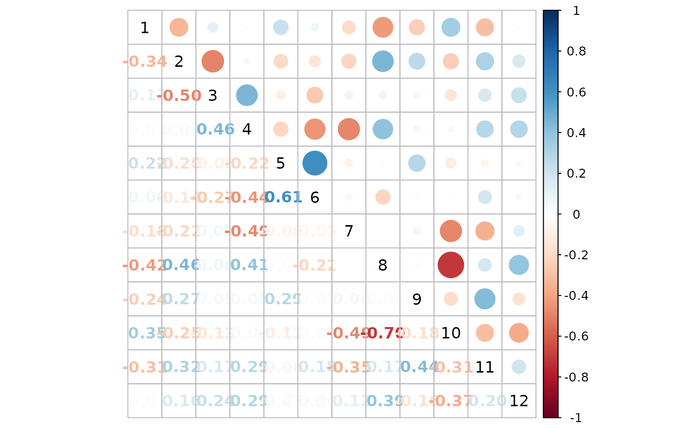
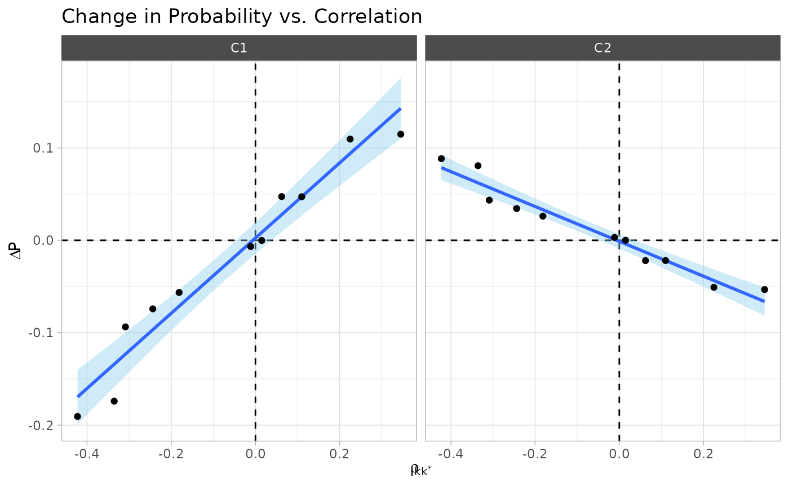

library(tidyverse)
library(protoClassification)
theme_set(
theme_light(base_family = "Avenir Next Condensed") +
theme(strip.background = element_rect(fill = "#4C4C4C"))
)One of the basic points we are pursuing is that the composition of categories comes from the wider correlation structure between the various properties we could use to categorize someone or something. It also result from the wider prevalence of those same properties.
Note. I refer to “composition effects” in a separate notebook, these are the changes in the composition of features related to a change in the classification model.
Data Simulation
In order to simulate the data we use in this paper, we generate correlated binary observations from two parameters:
- The marginal probabilities of .
- The correlation structure of .
set.seed(3)
K <- 12
rho <- rlkjcorr(1, K, eta = 1 / 4) ## use this to generate random correlation matrices
marginals <- rbeta(K, 2, 3) # use this to generate random probabilities
corrplot::corrplot.mixed(
rho,
tl.col = "black"
)
marginals |>
enframe() |>
ggplot(aes(name, value)) +
geom_col(width = 1 / 3) +
labs(x = NULL, y = "marginal probability")Now we can simulate data.
obs <- 5e3 ## high for precision
set.seed(10)
d <- make_binary_data(marginals, rho, obs)
params <- get_data_params(d) ## I will use this later.
d
#>
#> ── Data ──
#>
#> 5000 obs. of 12 variables:
#> $ x1 : int 0 0 0 1 0 0 0 0 0 0 ...
#> $ x2 : int 1 1 1 0 1 0 1 1 1 1 ...
#> $ x3 : int 0 1 0 1 0 0 0 1 1 0 ...
#> $ x4 : int 0 0 0 1 0 0 1 1 1 1 ...
#> $ x5 : int 0 0 1 1 1 1 0 0 0 0 ...
#> $ x6 : int 1 0 0 0 1 1 0 0 0 0 ...
#> $ x7 : int 0 1 0 0 0 0 0 0 0 0 ...
#> $ x8 : int 0 1 0 1 1 1 1 0 1 1 ...
#> $ x9 : int 0 0 0 0 0 1 0 0 0 1 ...
#> $ x10: int 0 0 1 0 0 0 0 1 0 0 ...
#> $ x11: int 0 0 0 0 0 0 1 0 1 1 ...
#> $ x12: int 0 0 0 0 0 0 1 0 0 1 ...
#>
#> ── Parameters ──
#>
#> ── Marginal Probabilities:
#> x1 x2 x3 x4 x5 x6 x7 x8 x9 x10 x11 x12
#> 0.32 0.58 0.72 0.61 0.40 0.46 0.20 0.51 0.20 0.21 0.18 0.25
#>
#>
#> ── Correlation Matrix:
#> x1 x2 x3 x4 x5 x6 x7 x8 x9 x10 x11 x12
#> x1 1.00 -0.34 0.11 0.01 0.22 0.06 -0.18 -0.42 -0.24 0.35 -0.31 -0.01
#> x2 -0.34 1.00 -0.50 0.03 -0.20 -0.14 -0.22 0.46 0.27 -0.25 0.32 0.16
#> x3 0.11 -0.50 1.00 0.46 -0.08 -0.27 0.07 0.06 0.05 -0.13 0.17 0.24
#> x4 0.01 0.03 0.46 1.00 -0.22 -0.44 -0.49 0.41 0.05 0.03 0.29 0.29
#> x5 0.22 -0.20 -0.08 -0.22 1.00 0.61 -0.06 0.02 0.29 -0.11 -0.06 -0.03
#> x6 0.06 -0.14 -0.27 -0.44 0.61 1.00 -0.05 -0.22 -0.02 0.02 0.18 0.04
#> x7 -0.18 -0.22 0.07 -0.49 -0.06 -0.05 1.00 0.00 0.06 -0.49 -0.35 0.12
#> x8 -0.42 0.46 0.06 0.41 0.02 -0.22 0.00 1.00 0.03 -0.70 0.17 0.39
#> x9 -0.24 0.27 0.05 0.05 0.29 -0.02 0.06 0.03 1.00 -0.18 0.44 -0.16
#> x10 0.35 -0.25 -0.13 0.03 -0.11 0.02 -0.49 -0.70 -0.18 1.00 -0.31 -0.37
#> x11 -0.31 0.32 0.17 0.29 -0.06 0.18 -0.35 0.17 0.44 -0.31 1.00 0.20
#> x12 -0.01 0.16 0.24 0.29 -0.03 0.04 0.12 0.39 -0.16 -0.37 0.20 1.00Note. The following probably belongs in an appendix, since it is very boring.
The trick is to take the marginal probabilities for and map them to a “latent Normal space” using a quantile function—i.e., the inverse of the standard normal cumulative distribution function.
mu <- qnorm(marginals, mean = 0, sd = 1)
mu
#> [1] -0.48095930 0.20606295 0.59248683 0.27982587 -0.25750144 -0.11024503
#> [7] -0.82921732 0.03633573 -0.82916828 -0.80761381 -0.89811718 -0.67444162We then used the correlation matrix and to generate 5,000 draws from a multivariate normal distribution.
Finally, we turn these latent values into binary features into probabilities by applying the normal cumulative distribution function (CDF) to them. Then, if the probability is larger than we turn that feature into a one, otherwise we turn it into a zero.
x <- stats::pnorm(z) > 0.5
x[] <- as.integer(x)
head(x, n = 10) # first 10 rows
#> [,1] [,2] [,3] [,4] [,5] [,6] [,7] [,8] [,9] [,10] [,11] [,12]
#> [1,] 1 0 1 1 0 1 0 0 0 1 1 1
#> [2,] 0 1 0 1 1 1 0 1 1 0 1 0
#> [3,] 0 0 1 1 1 0 1 1 0 0 0 0
#> [4,] 0 0 1 1 1 0 0 0 1 0 1 0
#> [5,] 1 1 1 1 1 1 0 0 0 1 0 0
#> [6,] 0 0 1 1 0 0 1 1 1 0 0 1
#> [7,] 0 0 1 1 1 1 1 0 0 0 0 0
#> [8,] 0 1 1 1 1 0 1 1 1 0 0 1
#> [9,] 0 0 1 1 1 1 0 1 0 0 0 0
#> [10,] 0 1 1 0 0 0 1 0 1 0 0 0That’s it. That is how you generate correlated binary data. This
might seem a bit weird, but it is a common data generation process. If
you were to calculate the “tetrachoric correlation” of x
using psych::tetrachoric(x) you would find that the result
is essentially the same as our original correlation matrix
.
Prototype Model
Now we just need to finish up specifying the parameters in the Prototype Model.
- The attention weights (one for each feature).
- The sensitivity parameters (one for each category).
- The prototypes (one for each category).
In this example we use an vector of attention weights that basically corresponds to a “rule.”
w <- rep(0, K)
w[[1]] <- 1
g <- c(10, 10)
prototypes <- list(
P1 = rep(1, K),
P2 = rep(0, K)
)
# Compute ----
baseline <- compute(d, prototypes, w, g)
baseline
#>
#> ── Output ──
#>
#> $ distance 5000 obs. of 2 variables
#> $ similarity 5000 obs. of 2 variables
#> $ probabilities 5000 obs. of 2 variables
#> $ data 5000 obs. of 12 variables
#>
#> ── Prototypes ──
#>
#> $ P1: num [1:12] 1 1 1 1 1 1 1 1 1 1 ...
#> $ P2: num [1:12] 0 0 0 0 0 0 0 0 0 0 ...
#>
#> ── Distance ──
#>
#> Manhattan (r = 1)
#>
#> ── Sensitivity ──
#>
#> g1 g2
#> 10 10
#>
#> ── Attention Weights ──
#>
#> w1 w2 w3 w4 w5 w6 w7 w8 w9 w10 w11 w12
#> 1 0 0 0 0 0 0 0 0 0 0 0
#>
#> ── Marginal Probabilities ──
#>
#> ── `colMeans(.$data)`
#> x1 x2 x3 x4 x5 x6 x7 x8 x9 x10 x11
#> 0.3168 0.5794 0.7186 0.6100 0.3992 0.4514 0.2086 0.5196 0.1998 0.2128 0.1764
#> x12
#> 0.2428
#>
#> ── `colMeans(.$probabilities)`
#> C1 C2
#> 0.3168166 0.6831834When all attention is placed on a single feature we get to see something very intuitive about the compositions of all the other features. From now on I am going to refer to this single feature as .
For starters, here are a few things.
-
The proportion of is the same as the proportion of .
-
The probability of given is one.
This should be intuitive but you can check for yourself:
round(conditionalProbs(baseline, "features"), 3) #> x1 x2 x3 x4 x5 x6 x7 x8 x9 x10 x11 x12 #> C1 1 0.405 0.766 0.61 0.509 0.499 0.152 0.329 0.126 0.328 0.083 0.236 #> C2 0 0.660 0.697 0.61 0.348 0.429 0.235 0.608 0.234 0.160 0.220 0.246 -
The composition of the other features within the category is basically a function the marginal probabilities of and the correlation matrix .
I will expand on this later.
For now, this is how we can visualize the composition of all features within each category.
probs <- summary(baseline, s = 5e3) # high s for precision
plot_data <- probs$conditional$features |>
rownames_to_column("C") |>
pivot_longer(!C, names_to = "x", values_to = "conditionalProb") |>
left_join(enframe(probs$marginal$features, "x", "marginal")) |>
left_join(enframe(params$rho[which.max(w), ], name = "x", value = "corr")) |>
mutate(x = factor(x, levels = paste0("x", 1:K)))
#> Joining with `by = join_by(x)`
#> Joining with `by = join_by(x)`
plot_data |>
ggplot(aes(x, y = marginal)) +
geom_segment(
aes(yend = conditionalProb),
arrow = arrow(length = unit(0.015, "npc"))
) +
facet_wrap(~C) +
labs(
x = NULL,
y = "probability",
title = "Feature Composition",
subtitle = "Change in probability after conditioning on C"
)This plot shows the change in probability from to .
The following plot replaces the horizontal axis with correlations between the “exclusive feature” .
plot_data |>
ggplot(aes(corr, marginal)) +
geom_segment(
aes(yend = conditionalProb),
arrow = arrow(length = unit(0.1, "cm"))
) +
geom_vline(xintercept = 0, linetype = "dashed") +
facet_wrap(~C) +
labs(
title = "Change in Probability",
subtitle = expression(
"As a function of the Correlation between" ~ x[k] ~ "and" ~ x[k]^"*"
),
x = expression(rho[kk^"*"]),
y = "probability"
)A discovery I made doing this simulations is that the change in probability of after conditioning on is roughly a linear function of the correlation between and .
plot_data |>
mutate(change = conditionalProb - marginal) |>
ggplot(aes(corr, change)) +
geom_hline(yintercept = 0, linetype = "dashed") +
geom_vline(xintercept = 0, linetype = "dashed") +
geom_smooth(method = "lm", fill = "skyblue") +
geom_point() +
facet_wrap(~C) +
labs(
title = "Change in Probability vs. Correlation",
y = expression(Delta ~ P), x = expression(rho[kk^"*"])
)
#> `geom_smooth()` using formula = 'y ~ x'This relationship is even cleaner when we remove .
exclusive_feature <- colnames(baseline$data)[which.max(w)]
plot_data |>
mutate(change = conditionalProb - marginal) |>
filter(x != exclusive_feature) |>
ggplot(aes(corr, change)) +
geom_hline(yintercept = 0, linetype = "dashed") +
geom_vline(xintercept = 0, linetype = "dashed") +
geom_smooth(method = "lm", fill = "skyblue") +
geom_point() +
facet_wrap(~C) +
labs(
title = "Change in Probability vs. Correlation",
y = expression(Delta ~ P), x = expression(rho[kk^"*"])
)
#> `geom_smooth()` using formula = 'y ~ x'
The Uncorrelated World
If what we say about the change in probabilities being connected to the correlations between and all other , then we would not expect to see anything if we generate uncorrelated data, right?
d_uncorr <- make_binary_data(marginals, diag(K), obs)
d_uncorr
#>
#> ── Data ──
#>
#> 5000 obs. of 12 variables:
#> $ x1 : int 1 0 1 0 0 0 0 0 0 1 ...
#> $ x2 : int 0 1 0 0 0 1 1 0 1 1 ...
#> $ x3 : int 1 1 1 1 0 1 1 1 1 0 ...
#> $ x4 : int 1 1 1 1 0 1 1 1 0 0 ...
#> $ x5 : int 0 0 1 0 0 1 0 0 1 1 ...
#> $ x6 : int 0 1 0 0 1 1 0 1 1 0 ...
#> $ x7 : int 0 0 0 0 0 0 1 0 0 0 ...
#> $ x8 : int 0 0 1 0 0 0 1 0 1 0 ...
#> $ x9 : int 0 0 1 0 0 0 0 0 0 0 ...
#> $ x10: int 0 0 0 0 1 1 0 0 0 0 ...
#> $ x11: int 0 0 1 1 0 0 0 0 0 0 ...
#> $ x12: int 0 0 1 0 1 0 0 0 0 0 ...
#>
#> ── Parameters ──
#>
#> ── Marginal Probabilities:
#> x1 x2 x3 x4 x5 x6 x7 x8 x9 x10 x11 x12
#> 0.32 0.58 0.72 0.61 0.40 0.46 0.20 0.51 0.20 0.21 0.18 0.25
#>
#>
#> ── Correlation Matrix:
#> x1 x2 x3 x4 x5 x6 x7 x8 x9 x10 x11 x12
#> x1 1 0 0 0 0 0 0 0 0 0 0 0
#> x2 0 1 0 0 0 0 0 0 0 0 0 0
#> x3 0 0 1 0 0 0 0 0 0 0 0 0
#> x4 0 0 0 1 0 0 0 0 0 0 0 0
#> x5 0 0 0 0 1 0 0 0 0 0 0 0
#> x6 0 0 0 0 0 1 0 0 0 0 0 0
#> x7 0 0 0 0 0 0 1 0 0 0 0 0
#> x8 0 0 0 0 0 0 0 1 0 0 0 0
#> x9 0 0 0 0 0 0 0 0 1 0 0 0
#> x10 0 0 0 0 0 0 0 0 0 1 0 0
#> x11 0 0 0 0 0 0 0 0 0 0 1 0
#> x12 0 0 0 0 0 0 0 0 0 0 0 1
uncorrelated <- compute(d_uncorr, prototypes, w, g)
probs_uncorrelated <- summary(uncorrelated, s = 4e3)Code not shown because it is redundant.
#> Joining with `by = join_by(x)`
#> Joining with `by = join_by(x)`Right!
In Search for a Simple Function
So, how do we think about the function linking
to the parameter values in the simple case in which all attention is
given to a single feature
(baseline)?
The first thing to notice is that the distance function is very simple.
It goes from this:
to this:
where denotes the feature with the single attention and the parameters are superfluous because the data is binary, and so there are only two possible distances: 0 and 1.
And so this equation:
becomes this
And so the probability that , when simply becomes this:
and it is almost close to zero when .
If we further assume that is very high, as is expected when we have more or less exclusionary categories, we have that this probability is approximately either 0 or 1.
But there’s more. By the law of total probability we get the following:
But this is not what we want, we want .
Thus, we can expand our thing once more using the law of total probability.
Given what we know about all of this, we have that and are conditionally independent.
This means that .
So we can rewrite our conditional probability (using the law of total probability) as:
Since we established that with high values: - and - and
This simplifies to:
Let’s verify this.
exclusive_feature <- colnames(sim_data)[which.max(w2)]
exclusive_feature
sim_data |>
summarize(across(everything(), mean), .by = all_of(exclusive_feature))
probs_baseline$conditional$featuresCorrect!
The Connection to Correlations
The relationship between and correlations becomes clear when we consider the bivariate normal copula underlying our binary data generation process.
For binary variables generated from a bivariate normal with correlation , we have:
IMPROVE, WITH JOINT PROBABILITY AND BIVARIATE CDF
where and are the marginal probabilities, and is the bivariate standard normal CDF.
bivariateCondProb(params, kstar = 3) |> round(3)
probs_baseline$conditional$features |> round(3)Visualization of the Relationship
# Show correlation coefficient
cor_coef <- cor(comparison_data$correlation, comparison_data$change)
cat("Correlation between ρ and probability change:", round(cor_coef, 3), "\n")Summary
This analysis demonstrates that when all attention is focused on a single feature in prototype-based classification:
Conditional Independence: Other features become conditionally independent of the category given the exclusive feature:
-
Simplified Conditional Probabilities:
Linear Relationship with Correlations: The change in probability is approximately linear in the correlation between feature and the exclusive feature .
Theoretical Foundation: This relationship stems from the bivariate normal copula underlying the binary data generation process, making the prototype model’s behavior predictable and interpretable.
This provides both theoretical insight and practical understanding of how prototype-based classification behaves under extreme attention weighting scenarios.
Extra
Modifying the correlation coefficient…
transform_rho
If , then , meaning that the difference between both quantities is zero. Knowing which category a person belongs to increaess or decreases the probability of the feature.
DO A MULTI MULTI SIMULATION
Remember to keep separate the idea of compositional effects and changing compositions.
Compositional effects come from changes in model parameters.
Changing compositions come from changes in data parameters (marginals and correlations)